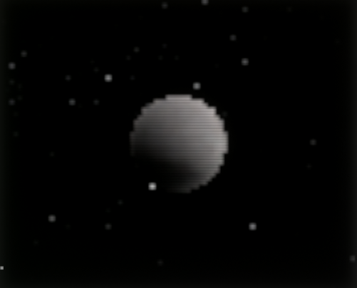
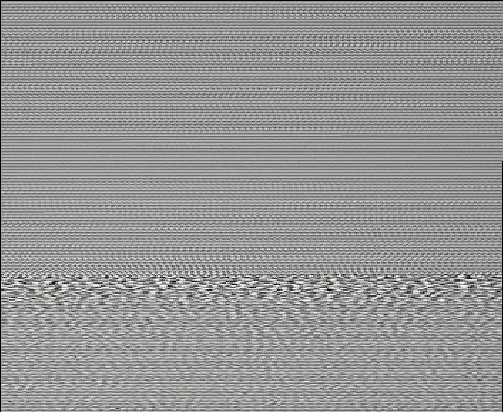
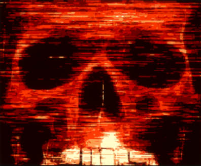
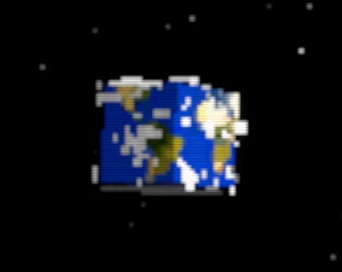
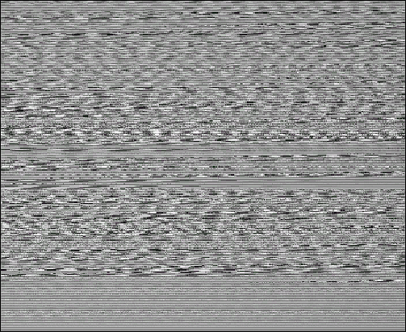

Signals
Mysterious broadcasts and anomalous transmissions
Signal Documentation
Signals are mysterious transmissions received by the player. They contain cryptic messages, warnings, and information about the anomalous world.
| Planet | Image | Signal Name | Type | Audio | Description |
|---|---|---|---|---|---|
 |
 |
Moon | Moon | This signal's audio actually depicts the Juno satellite's recording of Jupiter's magnetic field. | |
 |
 |
Evil | Unknown | ...the end is near | |
 |
 |
Calm4 | Unknown | This signal only has data on level 0. Signal is a reference to Minecraft. The song that is used for the audio is calm4. |